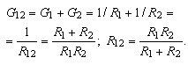
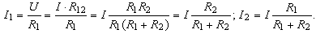

Для цепи с двумя параллельно соединёнными резисторами (рис. 2.20) эквивалентная проводимость G12 и эквивалентное R12сопротивление равны:

Общий ток (ток на входе цепи) I = UG12, напряжение U = R12I, а токи ветвей:

(2.5)
Откудаправило делителя тока: ток одной из двух параллельных ветвей цепи равен общему току I, умноженному на сопротивление другой (противоположной) ветви и делённому на сумму сопротивлений обеих ветвей.